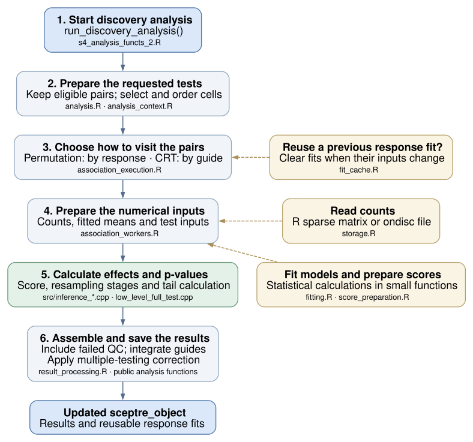
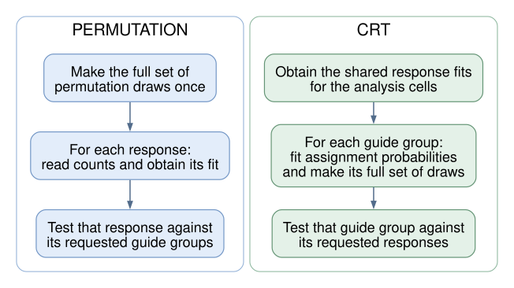

Walkthrough
Source:vignettes/articles/contributor-tools-refactor-walkthrough.Rmd
contributor-tools-refactor-walkthrough.RmdContributing · Object model · Discovery walkthrough · Object fields
Supporting record: claims apply to the revisions and environments named below; this page does not qualify a later candidate.
Historical Quarto source rendered as static narrative and source blocks. Its R chunks are not executed.
The aim is to make SCEPTRE easier to work on. The functions a user
calls and the saved sceptre_object stay the same. Inside
the package, selecting cells, reading counts, fitting models, running
tests and assembling results now have clearer homes.
Suggested reading: start with the module map, follow the example of one test, then use the file map when you want to change something. The bug-by-bug notes are a separate appendix, with a concrete example, fix and regression test for each item. Its QMD source is also versioned.
root <- normalizePath("../..", mustWork = TRUE)
stopifnot(file.exists(file.path(root, "R/analysis_context.R")))
show_function <- function(file, name) {
expressions <- parse(file.path(root, file), keep.source = TRUE)
refs <- attr(expressions, "srcref")
hit <- which(vapply(expressions, function(x) {
is.call(x) && identical(x[[1L]], as.name("<-")) &&
identical(x[[2L]], as.name(name))
}, logical(1)))
stopifnot(length(hit) == 1L)
lines <- readLines(file.path(root, file))
span <- refs[[hit]]
cat("```r\n", paste(lines[span[[1L]]:span[[3L]]], collapse = "\n"),
"\n```\n", sep = "")
}The modules and how they talk to each other
Yes: the refactored package has conceptual modules. Here, a module means a group of functions and files with a particular job. They all live in the same R package and share its namespace. The separation comes from smaller functions with explicit inputs and outputs; these are not separately installed packages.

How to read this map: an arrow points from the part
asking for work to the part doing it. Its label reads input →
returned value. For example, execution asks count access for a
gene in a particular set of cells and gets a count vector back. The
returned values travel back along the same connection; there is no
separate return arrow. These are the main calls, not every helper call
or their order in time. R filenames are under R/; C++ files
are under src/.
The boxes group closely related jobs to keep the map readable. Model fitting and score preparation, for example, have separate files even though they share a box. Pair QC and calibration-pair construction also have separate files; they share the same eligibility rule so that calibration and discovery agree about which pairs qualify.
What actually passes between the modules?
- Workflow and preparation read the saved object and make temporary lists of requested pairs, settings and ordered cell selections. The workflow also tells fit reuse when changed inputs require old fits to be cleared, and saves completed fits after a successful run. Those state-update calls are omitted from the figure.
- Execution coordinates the calculations. It asks count access for data, reuses a valid response fit or asks the fitter for one, and asks score preparation for the numerical arrays the test needs. It also arranges resampling draws using the existing sampling helpers.
- The numerical test receives those arrays and draws and returns effect estimates, p-values and requested diagnostics. It does not select data from the saved object or start parallel workers.
- Result processing turns returned records into tables, keeps pair labels, adds failed-QC rows back and performs the final processing for that analysis. The public workflow saves the completed output in the returned object.
This is a map of the refactored analysis core.
Importing data, assigning guides and plotting remain in their own
existing parts of the package. Some workflow-facing helpers still read
the S4 object; the numerical fitter, score preparation and test have
narrower inputs. The package is easier to work on because, for example,
changing a response fitter starts in fitting.R, while
changing count access starts in storage.R. Any resulting
behavior change still needs its own tests and review.
A run through those modules: discovery

Read the numbered boxes from top to bottom. The yellow boxes are supporting jobs used along the way. Unlike the module map above, this picture follows the order of work during a discovery run; it leaves out individual function calls.
Calibration and power use many of the same pieces, with their own requested pairs and final processing. For example, power results are grouped without the discovery analysis’s multiple-testing correction. Nextflow also uses some of these pieces directly; its nuclear shards are saved before global correction.
The practical change is that a function computing fitted means can now receive a response vector and a design matrix. It does not need to know how counts were stored, how workers were started, or where results will be saved.
Follow one requested test
Suppose discovery requests a test of guide group A against response gene R1.
-
Start from the existing object.
run_discovery_analysis()checks that prerequisite steps have run. It reads the settings and saves the completed results back into the returned object. -
Choose the pairs and cells.
analysis.Rkeeps pairs that passed QC.analysis_context.Rworks out which original count-matrix columns belong in each fit, and in what order. Counts and covariates must use that same order. -
Obtain the model fit. The analysis reuses an
earlier response fit only where it is still valid. Otherwise
fitting.Rfits the response model.score_preparation.Rturns the fit into the arrays the current test needs. -
Run the test.
association_workers.Rconnects those inputs to the C++ functionrun_association_test(). The C++ files calculate the effect, score and p-value using the existing resampling method. -
Assemble the result table.
result_processing.Rkeeps requested pair labels, adds failed-QC rows back, and sorts by p-value and response gene, with missing p-values last. It also integrates guides and applies the complete-family correction. The public analysis function then saves the results and reusable response fits.
The saved object still holds the user’s data and results. The temporary lists used inside an analysis hold the selected cells, settings and prepared inputs. They disappear when the run ends; they do not replace the saved-object format.
Why permutation and CRT have different loops
The two methods can reuse different work. The diagram below shows the common case using complement controls.

For permutation, reading and preparing R1 once lets us test it
against its requested guide groups. For CRT, fitting A’s assignment
probabilities and generating A’s draws once lets us test A against its
requested responses. These loops live in
association_execution.R; the calculations for the
individual tests live in association_workers.R.
NT-control discovery is an important qualification. Each guide group’s response fit uses that group’s treatment cells plus the NT cells. Those fits therefore remain specific to the group. Calibration with NT controls uses the NT pool. The refactor keeps those statistical distinctions explicit.
The indexing change, with five cells
A cell can have a different position in the original matrix, the cells retained after QC, and the particular fit being run. Those are three position numbers for the same cell.
Suppose QC retained original columns 2, 4, 5, 8, 11. Group A’s treatment cells are original columns 4, 5, and the NT pool is ordered 8, 2, 11. For NT-control discovery, the fitted data use treatment cells followed by NT cells. The actual selection code gives:
context_code <- new.env(parent = baseenv())
sys.source(file.path(root, "R/analysis_context.R"), envir = context_code)
index <- list(
analysis_to_source = c(2L, 4L, 5L, 8L, 11L),
groups_analysis = list(A = c(2L, 3L)),
nt_to_analysis = c(4L, 1L, 5L),
calibration_check = FALSE,
control_group_complement = FALSE
)
view <- context_code$make_fit_view(index, "A")
stopifnot(identical(view$source_cells, c(4L, 5L, 8L, 2L, 11L)),
identical(view$trt_fit_pos, 1:2))
knitr::kable(data.frame(
`Position in this fit` = seq_along(view$source_cells),
`Original matrix column` = view$source_cells,
`Position after QC` = view$fit_to_analysis,
Role = c("Treatment", "Treatment", "NT", "NT", "NT"),
check.names = FALSE
))Both the response vector and the design matrix select original columns 4, 5, 8, 2, 11. The treatment cells are positions 1, 2 inside that fit. That is why passing the original column numbers straight into a fitted test would be wrong.
The new code constructs this ordered selection in one place and passes it to both count-reading and model-fitting code. It avoids rediscovering the same relationships in several functions. Inside R, positions start at 1. At the R-to-C++ test entry, observed treatment positions are converted once to start at 0. The synthetic draws already use that C++ convention.
Show the actual cell-selection function
This excerpt is read from R/analysis_context.R when the
page is rendered.
show_function("R/analysis_context.R", "make_fit_view")Where would I make a change?
Use the question in the first column to choose a starting file. The last column says what work that file actually does.
| I want to… | Start here | What I will find |
|---|---|---|
| Change the checks or state updates around a public analysis |
s4_analysis_functs_2.R,
workflow_state.R
|
Prerequisite checks and saving completed results/fits into the returned object |
| Understand which cells and pairs a test uses |
analysis_context.R, analysis.R
|
Cell selections, cell order, pair identities and analysis settings |
| Change how counts are read from R matrices or ondisc | storage.R |
Read a response, count selected cells, construct/reopen backed data |
| Change pairwise QC |
pair_qc.R, src/pair_eligibility.h
|
Collect the measurements, then apply the current threshold rule; calibration uses that rule too |
| Change the response or assignment model fit | fitting.R |
Response/design to coefficients and dispersion, or treatment/design to assignment probabilities |
| Change how the fitted response becomes test inputs | score_preparation.R |
Fitted means and the current score arrays, in the selected cell order |
| Understand reuse of an earlier response fit | fit_cache.R |
Which changes clear saved fits, and how new fits are saved |
| Change the order or sharing of association work |
association_execution.R,
association_workers.R
|
The response loop for permutation, guide loop for CRT, and their test calculations |
| Change process splitting, progress messages or logs | execution.R |
Starting serial/parallel work and collecting its outputs |
| Change the numerical association test |
src/inference_*.cpp,
src/low_level_full_test.cpp
|
Effect/score calculations, tail approximation, resampling stages and the R entry function |
| Change output tables or guide integration | result_processing.R |
Output columns, failed-QC rows, guide integration and family correction |
ondisc is a separate dependency. SCEPTRE’s private
ondisc calls are now grouped in storage.R, which makes that
dependency easier to inspect and change. Importing data and assigning
guides still begin in their familiar import_functs.R and
assign_grna_functions.R files.
If you remember the old files
Much of the work previously spread across
medium_level_functs_v2.R and
association_testing_functions_v2.R is now divided among the
analysis, execution and worker files above. Numerical response fitting
and score preparation previously grouped in
precomputation_functions.R now live in
fitting.R and score_preparation.R. Result
processing also has its own file. The old large files were removed after
their callers were updated.
A small example of the new style
Inside the package, response fitting and score preparation can be read as two separate steps:
fit <- fit_response(expressions, covariate_matrix)
score <- prepare_score_components(expressions, covariate_matrix, fit)The existing response fitter runs Poisson glm.fit() and
then estimates and clips dispersion. A future faster fitter has a
specific place to start. Changing the fitter would still require
checking its statistical behavior and whether old saved fits can be
reused.
Show the actual response-fitting function
This excerpt comes directly from R/fitting.R.
show_function("R/fitting.R", "fit_response")Which bugs were fixed?
Some changes intentionally repair previously broken behavior. They are separate from moving code into clearer files. For example:
- An unsorted list of genomic positions could make cis-pair construction miss an eligible gene.
- An accepted intercept-only formula could fail when using NT controls because R had dropped a matrix dimension.
- Asking for extra diagnostic output could make discovery plots omit valid results whose optional diagnostics were missing.
- A cached response fit could survive a change of control cells or design and then be reused for the wrong fit.
The bug-by-bug appendix explains these and the import, input-mutation, plotting, calibration-safety and memory-cleanup fixes. It also identifies an avoidable dense-allocation improvement, the remaining limitations, and the two accepted memory costs. Every fix points to its implementation and regression test, so Tim can review a single item without reading an audit log.
How this helps later extensions
The refactor gives future work a starting point; it does not implement those extensions.
-
Faster GLM fitting: start with
fitting.Rand then check score inputs and saved-fit reuse. -
SPA or Wilcoxon: start with the individual-test
functions in
association_workers.R. A method should prepare the inputs it needs. - New pairwise QC: change the measurements and shared eligibility rule together, including how calibration candidates are accepted.
-
Bioconductor data or backed CRT: start with count
access in
storage.Rand inspect the relevant analysis loop. Backed CRT still needs its current validation restriction, I/O behavior and statistical/resource validation addressed before it can be enabled. - Nextflow: keep the scripts’ inputs, output tables and saved-object fields compatible. Apply the global correction after collecting the complete family, at the stage required by that pipeline.
The more detailed reference is ARCHITECTURE.md.
Testing: before and after
The original suite already checked imports, guide assignment, QC, calibration, power, discovery, plots, a backed import and parallel execution. The refactor keeps that foundation and adds focused tests for the smaller internal functions, cell ordering, fit reuse, numerical calculations and the bugs described above.
What changed in the numbers?
These measurements compare the original package
(21f9ea0) with the refactored package’s permanent
tests after the old/new comparison was separated out
(2ec09e9). Both ran in the same R/macOS/dependency
environment.
| Measure | Before | After |
|---|---|---|
Test blocks: named test_that() scenarios |
56 | 138 |
| Passing assertions inside those blocks | 2,578 | 4,199 |
| Executable R lines reached by the package tests | 3,336 / 4,722 | 4,097 / 4,868 |
| R-line coverage | 70.65% | 84.16% |
That is an increase of 13.51 percentage points in measured R-line coverage. The code and its executable-line count changed during the refactor. A line is covered when a test executes it at least once. This is more informative than counting tests alone: a loop can produce many assertions, and 2,225 assertions on each side check mock-data helpers. Neither count nor line coverage shows that every branch, input or statistical result has been checked.
The table records a matched coverage measurement at the earlier post-separation checkpoint, before the final handoff tests were strengthened. It is retained as that measurement, not presented as a fresh coverage percentage for a later commit. The final source-package check passes 4,397 assertions, with no failures, warnings or skips. Its receipt records the tested commit and package build. The coverage percentage above remains the earlier matched measurement.
The handoff pass also adds checks of individual and joint sampling probabilities, direct QC calculations from the input counts, meaningful result rows and pair labels, expected warnings, older saved-object inputs and failed worker reporting. A controlled check confirms that constant/biased samplers, correlated cells or repeated CRT draws, p-values of 2 on these toy inputs, changed pair labels, missing rows and unexpected warnings are rejected. Repeatability alone would miss several of these defects.
What do the added tests cover?
| Area | Examples of checks now made directly |
|---|---|
| Cells and counts | Noncontiguous/reordered cells; matching counts and covariate rows; sparse/backed agreement; preserving the supplied matrix and indices |
| Fitting and test calculations | Response/assignment fits from explicit inputs; score and effect formulas; declared resampling stages and sampler properties |
| Reuse and execution | Reused versus freshly computed fits; clearing fits after control/design changes; serial versus two-worker results; saving and resuming a current object |
| Previously broken cases | Intercept-only NT fits, unsorted imports/cis positions, symmetric dense inputs and the individual plotting regressions in the bug notes |
C++ gets additional direct checks. The package tests also call C++ through the R functions. Routine CI adds direct mathematical checks and controlled error tests: 9 draw-pointer cases, 214 count-buffer cases, 14 dispersion error-policy cases and 959 result-buffer cases. These deliberately trigger small failures and check cleanup; they do not exhaust the machine’s memory. They give targeted evidence about the numerical and memory-handling code, but we have not measured a C++ line-coverage percentage.
Permanent correctness tests and the temporary old/new comparison
These answer different questions:
| Question | Where it is checked |
|---|---|
| Does the current package behave correctly? | Permanent tests/testthat/ tests and checks of the
current C++ code under tools/checks/; these run in CI |
| Does the refactor match the old implementation on the agreed cases? | The manual suite under tools/refactor/consistency/;
this stays outside CI |
The unflagged manual comparison records 1,265 assertions in 31 blocks. The final handoff run explicitly requires backed coverage and passes 1,266: the additional assertion requires ondisc to be installed. It checks old/new API and saved-object compatibility, scientific outputs, cell/pair order and complete sampler streams. Some scenarios overlap the permanent suite, so these counts should not be added as independent test cases. The earlier 4,740-assertion figure described the mixed suite before this separation; checks were moved and current-behavior tests were expanded, rather than simply partitioning that total.
From a committed checkout, run that comparison with:
It builds the original and committed candidate separately, then
compares the installed candidate with verified original results. Read
comparison.json for the exact commits/outcome, and
checks.csv/the logs for details. Uncommitted changes are
excluded. The command
guide explains dependencies, output files and platform-specific
skips.
What remains outside these numbers?
There is still untested R code, including much of the generic object
display/ print/plot code in s4_helpers.R and some
validation paths. Line coverage also does not measure all branches or
the space of possible datasets. The figures above describe the package
tests only; examples, vignettes, C++ source probes, manual old/new
checks and actual pipeline runs do not contribute to that R percentage.
Full package checks and the separate pipeline/Nextflow
and resource qualification provide additional evidence.
Measurement details and per-file results
The coverage report retains exact source commits, source/test hashes, logs, test outcomes, coverage objects and per-file results. The paired measurement used covr 3.6.5 on R 4.6.0/macOS arm64, with the same dependencies and guarded ondisc 1.3.5. It instrumented R functions only, excluded generated Rcpp R wrappers using covr’s standard rule, and left native compilation at its ordinary flags. These are executable R-line percentages, not percentages of all package source or a measure of scientific validity. Source and tests were hash-checked before and after both runs. This one-off comparison is build-excluded developer evidence, not a new CI job.
A few words used in other notes
| Word | Meaning here |
|---|---|
| Cache | Previously computed response coefficients and dispersion, saved so they can be reused |
| View | The selected cells in a particular order; it does not mean copying the whole count matrix |
| Context | A temporary list of inputs and settings prepared for one analysis |
| Worker | An R function that performs one chunk of the analysis, in the current process or a separate process |
| Facade | The user-facing SCEPTRE functions and object that call the smaller internal functions |
| Backend | The way counts are stored and accessed, such as an R sparse matrix or ondisc |
The tour, figures, bug notes and comparison command stay in Git under
tools/refactor/ for maintainer review.
.Rbuildignore excludes them from the R source package. Keep
the root architecture guide and permanent tests later; after review,
preserve a tagged snapshot before retiring this temporary folder.